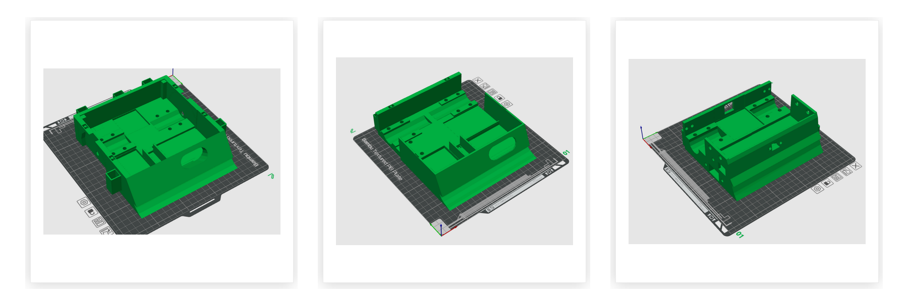

Project
Design and build a compact autonomous robot with sensors for environment detection and an operation strategy.
A Zumo-type robot was developed from a CAD design that was then manufactured by 3D printing. The system integrates control electronics, actuators, and sensors for environment perception. The robot's behavior was programmed and an operating strategy was defined for its operation.
CAD model design, robot assembly, creation of the robot circuit, sensor integration, system control programming, and functional testing.
A functional robot capable of environment detection and execution of programmed strategy against other zumos was obtained.